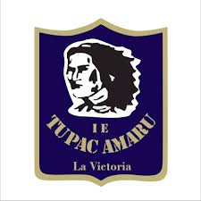
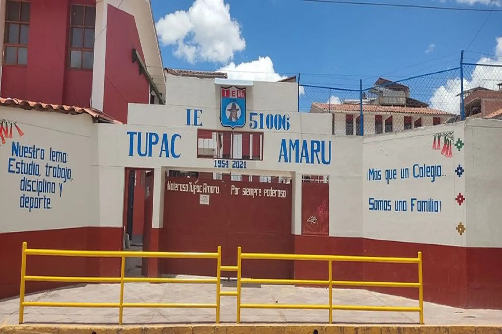

Comunicado N° 028-2025
Convocatoria a Asamblea de Padres de Familia para coordinaciones del año lectivo.
Ver detalles de la agenda
Lugar: Patio principal. Hora: 4:00 PM. Se tratarán temas de APAFA y mantenimiento escolar.


Convocatoria a Asamblea de Padres de Familia para coordinaciones del año lectivo.
Lugar: Patio principal. Hora: 4:00 PM. Se tratarán temas de APAFA y mantenimiento escolar.
Se comunica a los padres de familia sobre el nuevo horario de atención en administración.